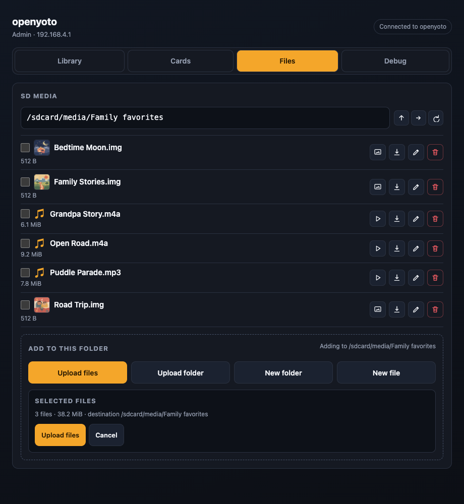
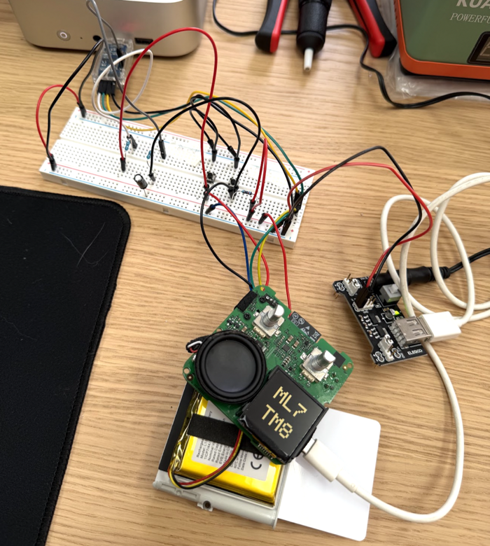

Bring a file or a whole folder.
Upload your audio and artwork through the local admin page.


In development · Build from source
Play local audio with NFC cards and manage it on the player, without a Yoto account or Yoto's services.
For experienced hardware tinkerers with a Yoto Mini rev04 or rev05. Rev05 display support is partial: on/off pixels, no greyscale. Not a ready-to-use firmware release.
Installing means opening and flashing your player. Read the guide and back up first.

Know your board before you build
Implemented features are not a claim that every hardware path is fully validated. There are no published releases; installation currently starts with source.
Before you open it
A wiring mistake or interrupted flash can leave the player unbootable or permanently damaged. Opening it may affect your warranty.
You need an external USB-UART adapter with 3.3 V logic and access to the internal pins. The player's USB-C port is power-only: it cannot flash the ESP32. Never use 5 V UART signals.
Read the complete flash guide before startingCheck the exact board. Save its complete original flash and SD card, with a separate copy tied to this player.
Set up ESP-IDF and explicitly select the correct revision. Do not assume the checked-in configuration matches yours.
Follow the guide's wiring and bootloader steps. Keep the original backups; they are not a guarantee of recovery.
Create an admin card, install the web interface, then add your audio and cards. Follow post-flash setup.
On the player, in your browser
After setup, scan the admin card, join the temporary hotspot, and enter the displayed access code. Your library and card mappings live on the SD card. The hotspot is open and the page uses HTTP: understand the limits.
Before you decide
Not as a drop-in replacement for the stock library. Open Yoto does not import purchased or protected Yoto audio, and stock card metadata is not translated into Open Yoto playlists. Use local files you own or have permission to use, with compatible writable NFC cards.
No. The current project targets Yoto Mini rev04 and rev05 only. A similar enclosure or product name is not enough to establish compatibility: identify the board before building or flashing.
No. The openyoto hotspot has no Wi-Fi password and the admin page uses HTTP, not HTTPS. The displayed access code gates the interface, but does not encrypt traffic. Nearby people may observe traffic; do not treat the code as network security.
Use admin mode only in a trusted setting and scan the admin card again to stop the hotspot when finished. See the security guidance and reporting path.
Keep a complete flash dump and SD backup from this exact player before changing either. The original flash includes device-specific identifiers; another player's dump is not a substitute. Restoring requires working hardware and UART access, and this project does not promise a tested recovery path or successful repair.
No Yoto account or internet connection is needed for local playback and administration after setup. Audio and card mappings are read from the player's SD card. This is independent firmware, not a way to access Yoto's services.
An independent project
Hardware observations, reproducible bug reports, documentation improvements, and code contributions all help. Include your board revision and build details in reports; remove device identifiers and access codes from shared logs.